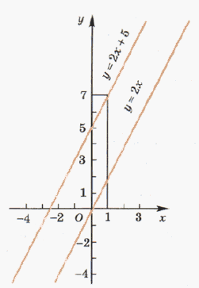

Графиком уравнения с двумя переменными называются множество всех точек координатной плоскости, координаты которых являются решениями этого уравнения
Графиком линейного уравнения с двумя переменными, в котором хотя бы один из коэффициентов при переменных не равен нулю, является прямая.
Линейной функцией называются функция вида y = kx + b, где k и b – заданные числа.
Можно показать, что графиком линейной функции является прямая. Так как прямая определяется двумя её точками, то для построения графика функции y = kx + b достаточно построить две точки этого графика.
Построить график y = 2x + 5:
При x = 0 значение функции y = 2x + 5 равно 5, т. е. точка (0; 5) принадлежит графику. Если x = 1, то y = 2*1 + 5 = 7, т. е. точка (1; 7) также принадлежит графику. Построим точки (0; 5) и (1; 7) и проведём через них прямую. Эта прямая и является графиком функции y = 2x + 5.
График функции y = kx + b получается сдвигом графика функции y = kx на b единиц вдоль оси ординат (Oy). Графиками функции y = kx и y = kx + b являются параллельные прямые.
Решите самостоятельно
1. Постройте график функции, заданной формулой:$$y=-3 x+4$$;
2. Постройте график функции, заданной формулой:$$y=-x+3$$;
3. Постройте график функции, заданной формулой:$$y=x-2$$;
4. Постройте график функции, заданной формулой:$$y=0,3 x-5$$;
Проверить свои построения вы можете на сайте Desmos